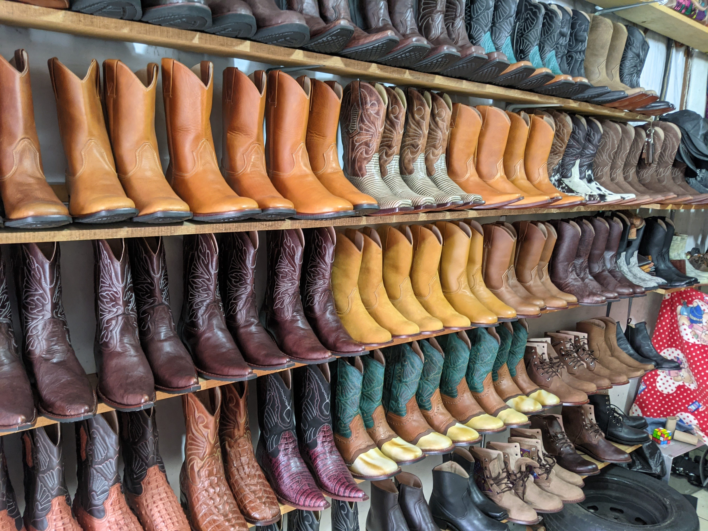
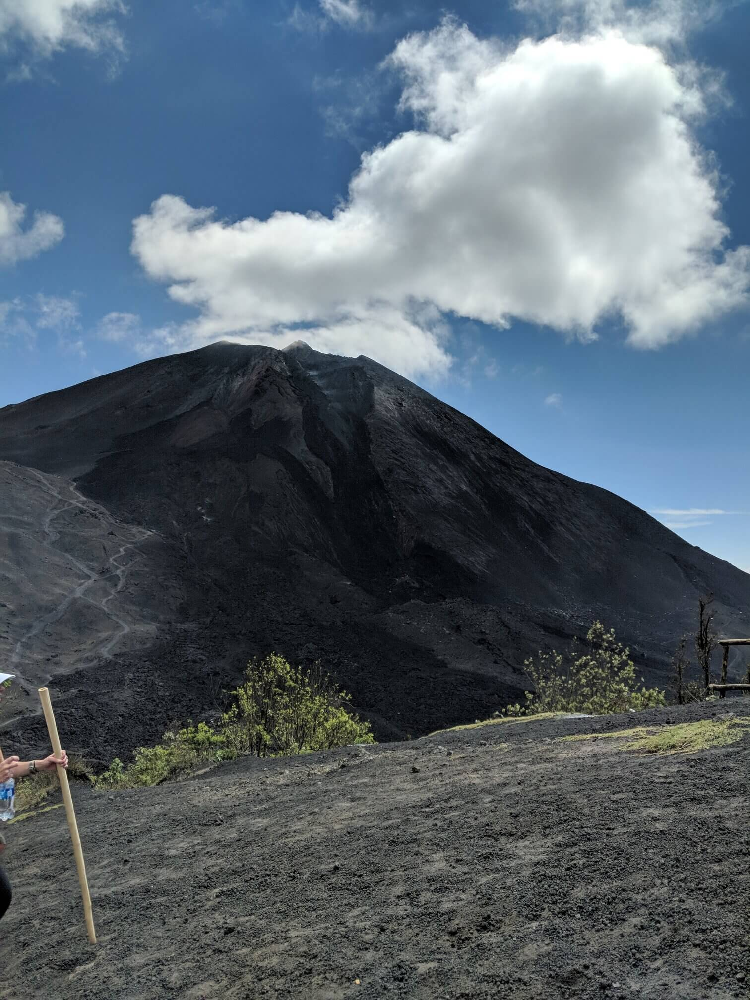
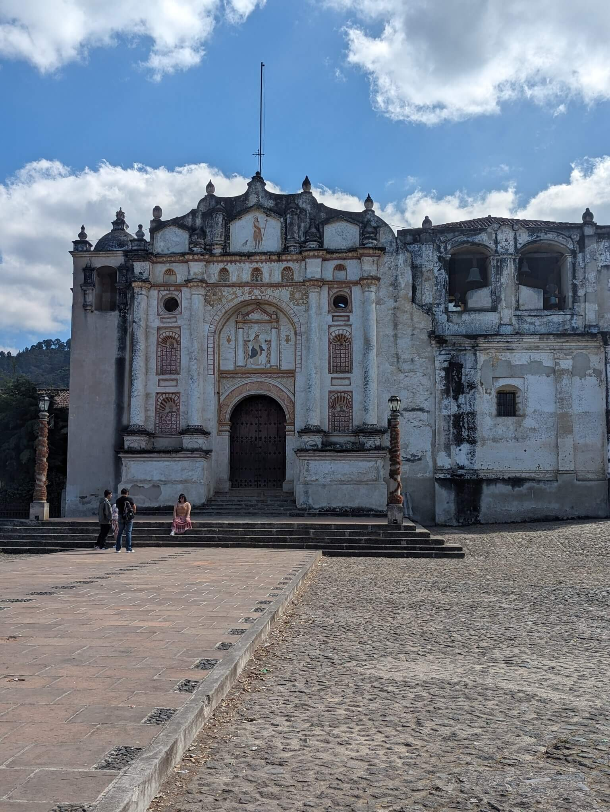
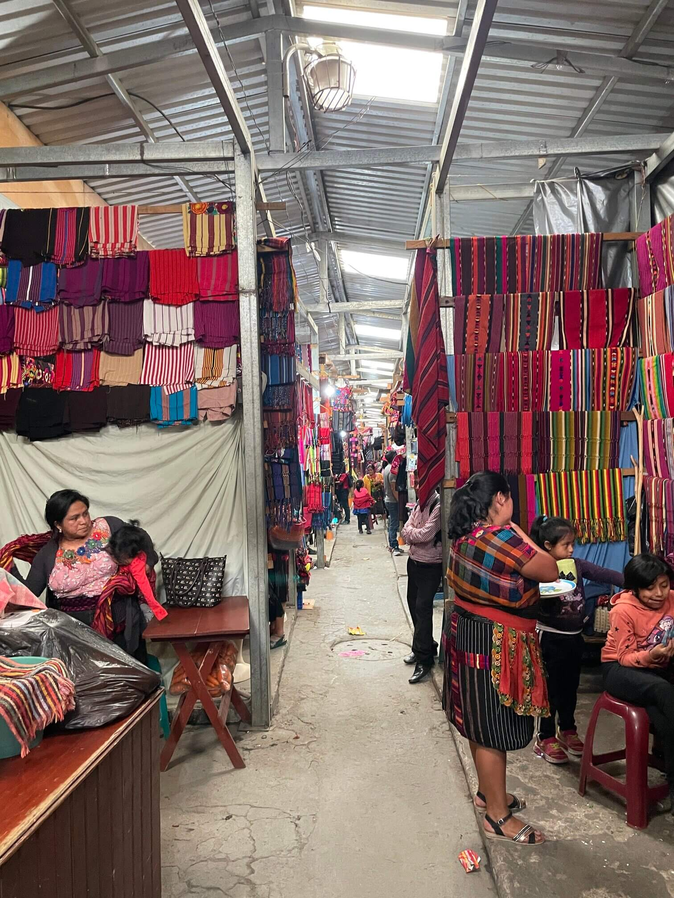
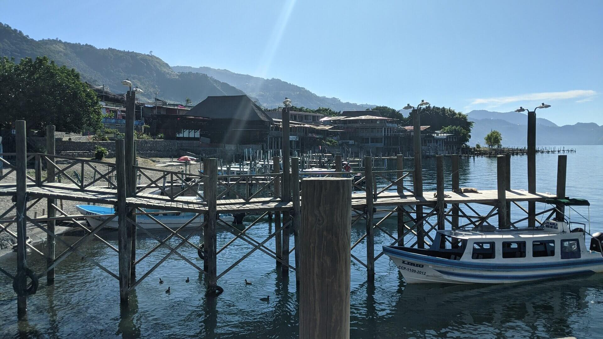
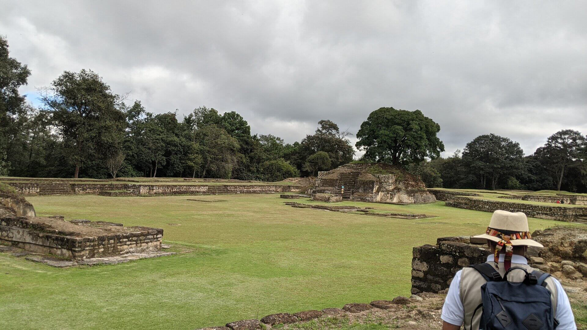
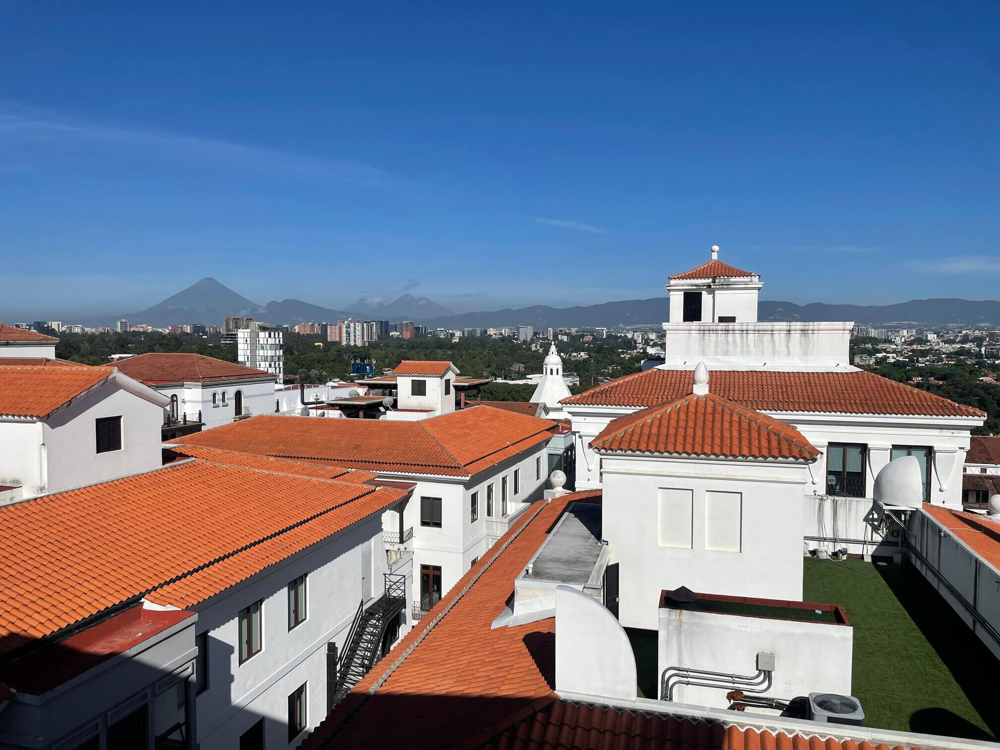
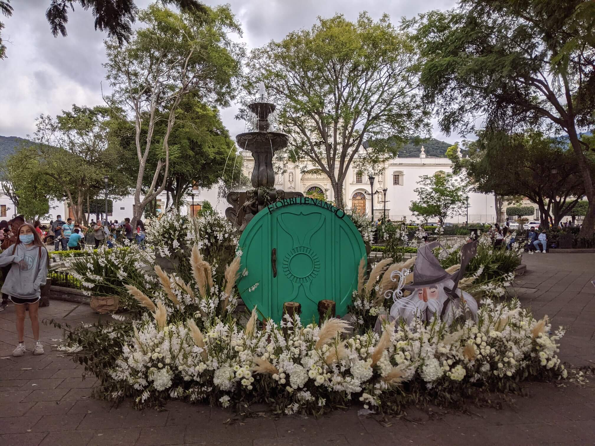

Day Trips
Within an hour drive from Antigua Guatemala are several amazing day trips to grab your attention. If you love shopping, Chichicastenango offers local hand crafted items. If outdoor adventure is what you're looking for, the active volcano Pacaya hike will provide a thrilling ascent with beautiful views. While there you can cook pizza on hot lava rocks headed by the volcano. Travel back hundreds of years as you visit the Mayan ruins of Iximche where you can learn history from a local tour guide who will take you back to a time of high stakes games where the team who loses also loses their heads. Sit lake side as you take in the views from the beaches of Lago Atitlan, the deepest lake in Central America. Come find your paradise in and around Antigua Guatemala!

Pacaya Volcano
One of 3 active volcanoes in Guatemala, Pacaya reaches 8,400 feet above sea level and sits about 30 miles outside of the city Antigua. Get your reservation to eat pizza cooked with lava rocks heated by the volcano. Park entrance fees are $6.50 plus $26 for a guide, guides are not required by the park but are a very good idea as tourists can be victims of robberies if not accompanied. This is a perfect day trip for those who love the outdoors. This is a moderately strenuous hike but not long. For those who need a little extra help there are horses you can ride for about $20. Make sure to wear good shoes as there are lava rocks on the path and they will get in sandals and they are sharp!.

Pastores (town known for it's handmade leather goods)
Pastores is a town about a 20 minute bus ride outside of Antigua. Here there are many different leather artisans who can make anything from belts to boots out of leather. They will trace and/or measure you to give you the best experience of a custom piece of leather clothing for less than something made with fake leather “off the rack" would cost in the US.

San Juan del Obispo
Small town a short bus ride from Antigua Known for having one of the first Catholic churches in Guatemala Has a sculpture of the níspero (Locquat in English) fruit and you can buy marmalades and syrups made from the fruit here Watch chocolate go from a bean to a paste with sugar being incorporated then formed into discs that when dry can be added to warm milk or water for hot chocolate.

Chichicastenango Market
Mercado de Chichicastenango is well known as colorful and open air as well as possibly the craft largest market in Central America. Vendors from all over the region come to sell their products. From typical clothing to pottery to local food, this market is sure to have something for everyone. Open every day but Thursday and Sunday are the largest with the most vendors. The streets are wall to wall with people. It is expected that you haggle for a final price so don’t accept the first offer. Take a walk outside the market of Chichi, as the locals call it, and you'll find the Roman Catholic Iglesia de Santo Tomas. This church is not only where locals participate in Maya rituals on the steps but also home to the Chichicastenango Regional Museum.

Panajachel (largest town on Lago Atitlan)
Panajachel rests on the shore of Lake Atitlan and is full of culture, restaurants and a street market. This is a major launching location for the lanchas that cross the lake to take locals and tourists alike to the other villages that surround the lago Atitlán.

Iximche (mayan ruins)
a Pre-Columbian Mesoamerican archaeological site, you may see religious sacrifices being made, if so be respectful, steer clear and stay quiet.

Cayala
A city within a city, Cayala is a gated multi purpose community with white walled buildings, a high end hotel, restaurants and shops as well as homes
